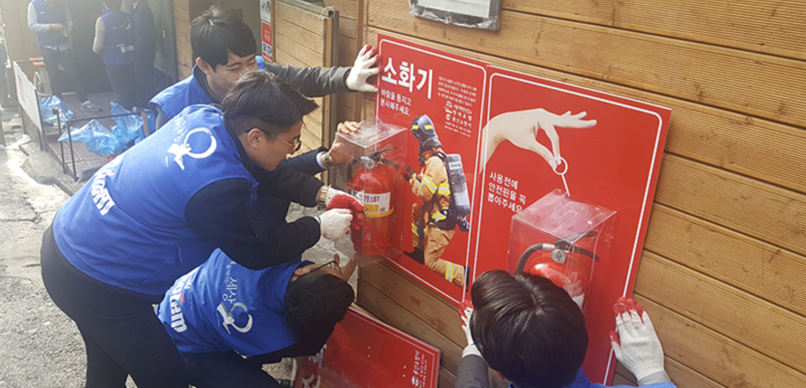
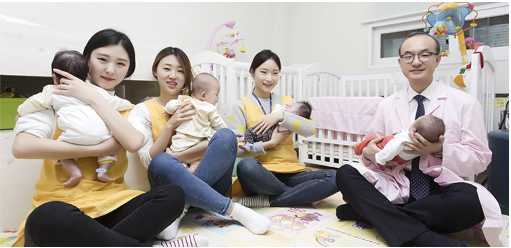
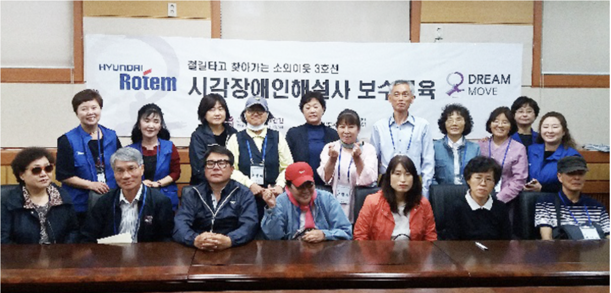
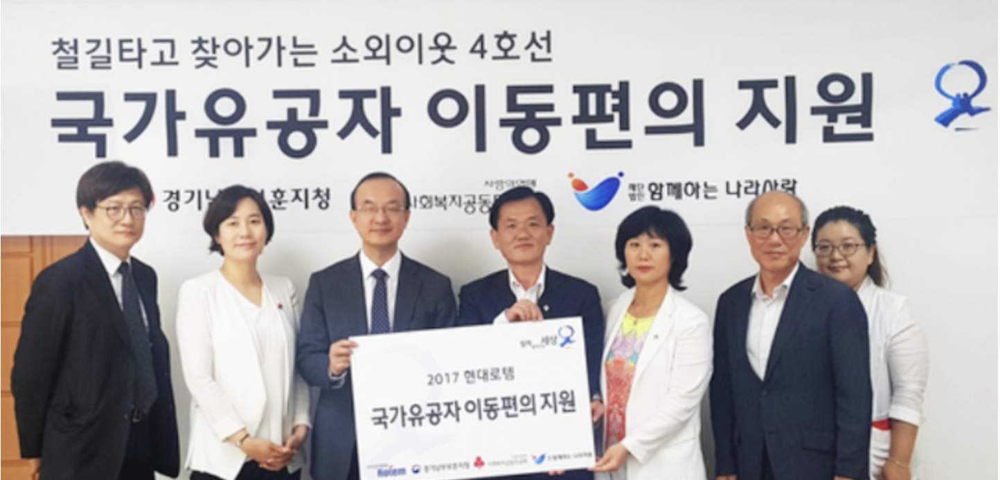
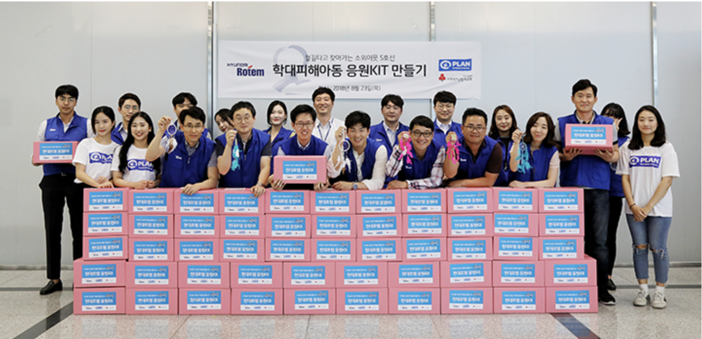

> 지속가능경영 > 사회공헌
사회공헌
TOGETHER WE STAND FOR YOUR FUTURE 미래를 향한 진정한 파트너
현대로템의 사회공헌활동은 기업의 사회적 책임을 실천하는 동시에 기업의 가치를 높이는 방향으로 진행하고 있습니다.
현대로템만의 기업 특성과 강점을 활용하여 사회적 약자를 배려하는 한편 모든 이해관계자들과 함께 지속가능한 미래 가치를 창조하고 그 결과를 공유하는 ‘모두가 행복한 사회 만들기’를 실천하려 합니다.
1호선
- 
- 서울역 쪽방촌 독거노인 안전 및 생활개선
- -화제예방 보이는 소화기함 설치 및 전기소품 교체
- -여름 / 겨울나기 물품후원 및 도배 / 페인트등 주거생활 개선 지원
2호선
- 
- 홍대입구역 입양대기 영유아 성장지원
- -영유아 보호시설 레노베이션 및 안전시설 설치
- -입양대기 아동 성장 후원 및 돌잔치
- -임직원 재능기부 성장앨범 만들기
3호선
- 
- 경복궁역 시청각장애인 문화해설사 양성
- -시청각 장애인 문화해설사 보수교육 및 양성 후원
- -장애인 궁궐 문화 체험행사
4호선
- 
- 동작역(현충원) 국가유공자 이동편의 지원
- -저소득 국가유공자 전동 휠체어 스쿠터 후원
5호선
- 
- 학대피해아동 의료 및 심리치료 지원
- -학대피해아동 긴급 의료비 후원
- -학대피해아동 심리치료비 후원
- -임직원 참여 응원 키트 제작